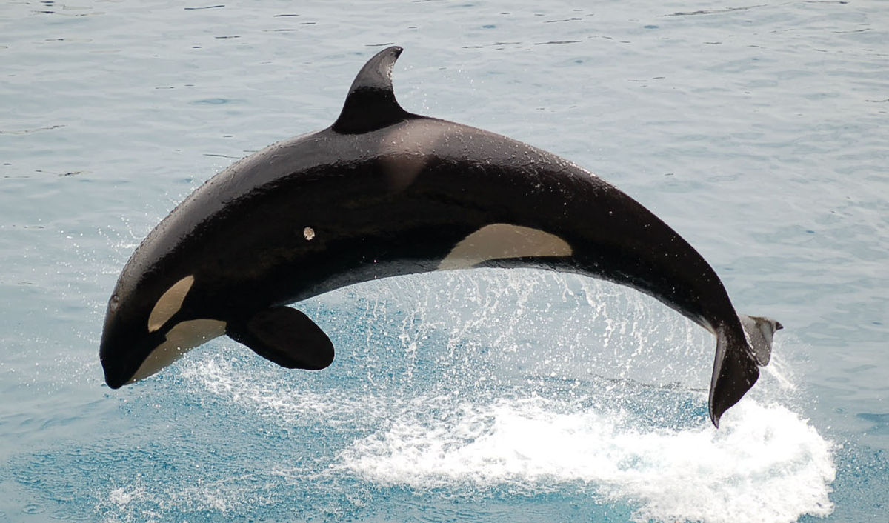

narval
narval delfin
delfin casa
casa ballena jorobada
ballena jorobada ballena azul
ballena azulLos platanistoideos (Platanistoidea), conocidos vulgarmente como delfines de río (a diferencia de los delfínidos o delfines oceánicos), son una superfamilia de cetáceos odontocetos que tienen su hábitat en estuarios y cursos fluviales. Esta superfamilia se compone de dos familias.
Características: Todos los platanistoideos presentan largos y finos hocicos. Su vista es muy limitada (en algunas especies, inexistentes), por lo que el sentido de la ecolocalización les resulta indispensable a la hora de alimentarse y nadar. Su aleta dorsal es poco desarrollada. Tal vez una de las características más llamativas es, al igual que en la familia Monodontidae, la capacidad de mover el cuello, a diferencia de los delfines oceánicos, que poseen las vértebras cervicales fusionadas.
| narval |
orca | delfin |
| casa |
ballena jorobada |
ballena azul |